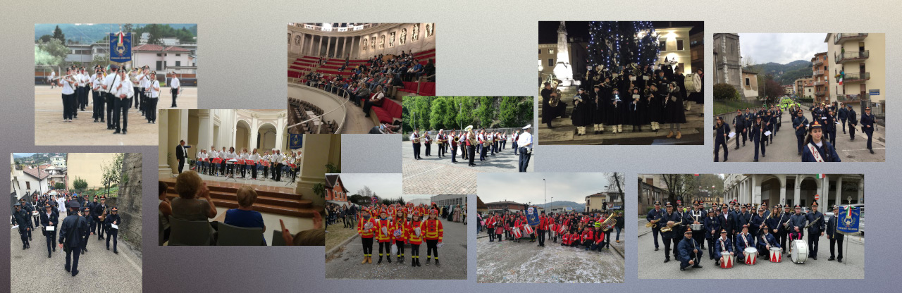

Questa sezione è dedicata ai bandisti ed a tutti quelli che intendono tenersi aggiornati sui servizi e sui concerti della Banda Cittadina, della Sabo Band e della Junior Band.
Troverete inoltre tutte le date e gli orari dei saggi degli allievi ed una sezione dedicata agli orari delle lezioni della Scuola di Musica Camillo Bee.
I nostri Servizi e Concerti
Domenica 6 Giugno 2021
Cornedo Vicentino si prepara ad accogliere la prima edizione di Librar Cornedo, un evento importante che segna la ripresa delle attività culturali per il nostro territorio, dopo l’ennesimo momento difficile superato insieme
LIBRAR CORNEDO sarà per Cornedo Vicentino, la Valle dell’Agno e per i propri rispettivi cittadini “un’ora d’aria”, un momento per rilassarsi, godere del bellissimo Parco comunale Pretto-Cassanello, entrare nel fantastico mondo del libro e della letteratura, attraverso incontri con gli autori, note musicali e rappresentazioni teatrali.
La banda Cittadina di Cornedo sarà presente a questo evento Domenica 6 giugno dopo la SS. Messa delle ore 10.30 con un concerto.
La nostra musica torna finalmente a risuonare per il nostro paese che riparte
Info per i bandisti
Finalmente domenica 18 ottobre torniamo a suonare per la cittadinanza di Cornedo
Domenica 18 ottobre la Banda si esibirà in un concerto in piazza Aldo Moro a Cornedo.
Questo breve concerto lo abbiamo fortemente voluto per dare un momento di gioia ai cornedesi in un momento nel quale tutto sembra precipitare.
La Banda suonerà otto brani alle ore 11.15, dopo la SS. Messa domenicale.
Il tutto sarà eseguito nel massimo rispetto della sicurezza dei suonatori e dei cittadini. I cittadini sono invitati a tenere un comportamento in linea con le normative anticovid.
Ringraziamo il Gruppo Alpini per la disponibilità offerta pre il servizio d'ordine.
Info per i bandisti
A causa dell'emergenza "Corona Virus" tutti i servizi ed i concerti della Banda Cittadina di Cornedo sono stati sospesi dal 16 Febbraio 2020 a data da destinarsi
A causa dell'emergenza "Corona Virus" tutti i servizi ed i concerti della Sabo Band sono stati sospesi dal 16 Febbraio 2020 a data da destinarsi
A causa dell'emergenza "Corona Virus" tutti i servizi ed i concerti della Junior Band sono stati sospesi dal 16 Febbraio 2020 a data da destinarsi
A causa dell'emergenza "Corona Virus" tutti i saggi previsti sono stati sospesi dal 16 Febbraio 2020 a data da destinarsi
La Scuola di Musica Camillo Bee
A causa dell'emergenza "Corona Virus" le lezioni sia collettive che individuali della Scuola di Musica Camillo Bee sono state sospese dal 16 Febbraio 2020 a data da destinarsi